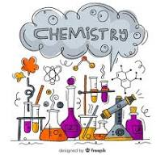
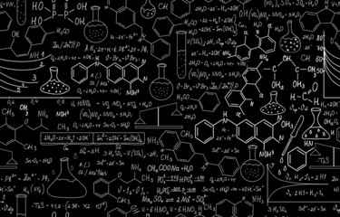

header start

INTRODUCTION
The 16th and 17th centuries saw the beginnings of what we now recognize as modern chemistry. During this period, great advances were made in metallurgy, the extraction of metals from ores, and the first systematic quantitative experiments were carried out
Chemistry is the scientific study of the properties and behavior of matter. It is a physical science within the natural sciences that studies the chemical elements that make up matter and compounds made of atoms, molecules and ions: their composition, structure, properties, behavior and the changes they undergo during reactions with other substances.Chemistry also addresses the nature of chemical bonds in chemical compounds.
In the scope of its subject, chemistry occupies an intermediate position between physics and biology. It is sometimes called the central science because it provides a foundation for understanding both basic and applied scientific disciplines at a fundamental level. For example, chemistry explains aspects of plant growth (botany), the formation of igneous rocks (geology), how atmospheric ozone is formed and how environmental pollutants are degraded (ecology), the properties of the soil on the Moon (cosmochemistry), how medications work (pharmacology), and how to collect DNA evidence at a crime scene (forensics).
Chemistry has existed under various names since ancient times.It has evolved, and now chemistry encompasses various areas of specialisation, or subdisciplines, that continue to increase in number and interrelate to create further interdisciplinary fields of study. The applications of various fields of chemistry are used frequently for economic purposes in the chemical industry.
He great challenge in chemistry is the development of a coherent explanation of the complex behaviour of materials, why they appear as they do, what gives them their enduring properties, and how interactions among different substances can bring about the formation of new substances and the destruction of old ones. From the earliest attempts to understand the material world in rational terms, chemists have struggled to develop theories of matter that satisfactorily explain both permanence and change. The ordered assembly of indestructible atoms into small and large molecules, or extended networks of intermingled atoms, is generally accepted as the basis of permanence, while the reorganization of atoms or molecules into different arrangements lies behind theories of change. Thus chemistry involves the study of the atomic composition and structural architecture of substances, as well as the varied interactions among substances that can lead to sudden, often violent reactions.
The scope of chemistry
The days are long past when one person could hope to have a detailed knowledge of all areas of chemistry. Those pursuing their interests into specific areas of chemistry communicate with others who share the same interests. Over time a group of chemists with specialized research interests become the founding members of an area of specialization. The areas of specialization that emerged early in the history of chemistry, such as organic, inorganic, physical, analytical, and industrial chemistry, along with biochemistry, remain of greatest general interest. There has been, however, much growth in the areas of polymer, environmental, and medicinal chemistry during the 20th century . Moreover, new specialities continue to appear, as, for example, pesticide, forensic, and computer chemistry.
The Methadology of Chemistry
 The methodology of chemistry
molecular structure
molecular structure
A ball-and-stick model of molecular structure, showing atoms bonded together.
Chemistry is to a large extent a cumulative science. Over time the number and extent of observations and phenomena studied increase. Not all hypotheses and discoveries endure unchallenged, however. Some of them are discarded as new observations or more satisfying explanations appear. Nonetheless, chemistry has a broad spectrum of explanatory models for chemical phenomena that have endured and been extended over time. These now have the status of theories, interconnected sets of explanatory devices that correlate well with observed phenomena. As new discoveries are made, they are incorporated into existing theory whenever possible. However, as the discovery of high-temperature superconductors in 1986 illustrates, accepted theory is never sufficient to predict the course of future discovery. Serendipity, or chance discovery, will continue to play as much a role in the future as will theoretical sophistication.
Studies of molecular structure
The chemical properties of a substance are a function of its structure, and the techniques of X-ray crystallography now enable chemists to determine the precise atomic arrangement of complex molecules. A molecule is an ordered assembly of atoms. Each atom in a molecule is connected to one or more neighbouring atoms by a chemical bond. The length of bonds and the angles between adjacent bonds are all important in describing molecular structure, and a comprehensive theory of chemical bonding is one of the major achievements of modern chemistry. Fundamental to bonding theory is the atomic–molecular concept.
Atoms and elements
As far as general chemistry is concerned, atoms are composed of the three fundamental particles: the proton, the neutron, and the electron. Although the proton and the neutron are themselves composed of smaller units, their substructure has little impact on chemical transformation. As was explained in an earlier section, the proton carries a charge of +1, and the number of protons in an atomic nucleus distinguishes one type of chemical atom from another. The simplest atom of all, hydrogen, has a nucleus composed of a single proton. The neutron has very nearly the same mass as the proton, but it has no charge. Neutrons are contained with protons in the nucleus of all atoms other than hydrogen. The atom with one proton and one neutron in its nucleus is called deuterium. Because it has only one proton, deuterium exhibits the same chemical properties as hydrogen but has a different mass. Hydrogen and deuterium are examples of related atoms called isotopes. The third atomic particle, the electron, has a charge of -1, but its mass is 1,836 times smaller than that of a proton. The electron occupies a region of space outside the nucleus termed an orbital. Some orbitals are spherical with the nucleus at the centre. Because electrons have so little mass and move about at speeds close to half that of light, they exhibit the same wave–particle duality as photons of light. This means that some of the properties of an electron are best described by considering the electron to be a particle, while other properties are consistent with the behaviour of a standing wave. The energy of a standing wave, such as a vibrating string, is distributed over the region of space defined by the two fixed ends and the up-and-down extremes of vibration. Such a wave does not exist in a fixed region of space as does a particle. Early models of atomic structure envisioned the electron as a particle orbiting the nucleus, but electron orbitals are now interpreted as the regions of space occupied by standing waves called wave functions. These wave functions represent the regions of space around the nucleus in which the probability of finding an electron is high. They play an important role in bonding theory.
The methodology of chemistry
molecular structure
molecular structure
A ball-and-stick model of molecular structure, showing atoms bonded together.
Chemistry is to a large extent a cumulative science. Over time the number and extent of observations and phenomena studied increase. Not all hypotheses and discoveries endure unchallenged, however. Some of them are discarded as new observations or more satisfying explanations appear. Nonetheless, chemistry has a broad spectrum of explanatory models for chemical phenomena that have endured and been extended over time. These now have the status of theories, interconnected sets of explanatory devices that correlate well with observed phenomena. As new discoveries are made, they are incorporated into existing theory whenever possible. However, as the discovery of high-temperature superconductors in 1986 illustrates, accepted theory is never sufficient to predict the course of future discovery. Serendipity, or chance discovery, will continue to play as much a role in the future as will theoretical sophistication.
Studies of molecular structure
The chemical properties of a substance are a function of its structure, and the techniques of X-ray crystallography now enable chemists to determine the precise atomic arrangement of complex molecules. A molecule is an ordered assembly of atoms. Each atom in a molecule is connected to one or more neighbouring atoms by a chemical bond. The length of bonds and the angles between adjacent bonds are all important in describing molecular structure, and a comprehensive theory of chemical bonding is one of the major achievements of modern chemistry. Fundamental to bonding theory is the atomic–molecular concept.
Atoms and elements
As far as general chemistry is concerned, atoms are composed of the three fundamental particles: the proton, the neutron, and the electron. Although the proton and the neutron are themselves composed of smaller units, their substructure has little impact on chemical transformation. As was explained in an earlier section, the proton carries a charge of +1, and the number of protons in an atomic nucleus distinguishes one type of chemical atom from another. The simplest atom of all, hydrogen, has a nucleus composed of a single proton. The neutron has very nearly the same mass as the proton, but it has no charge. Neutrons are contained with protons in the nucleus of all atoms other than hydrogen. The atom with one proton and one neutron in its nucleus is called deuterium. Because it has only one proton, deuterium exhibits the same chemical properties as hydrogen but has a different mass. Hydrogen and deuterium are examples of related atoms called isotopes. The third atomic particle, the electron, has a charge of -1, but its mass is 1,836 times smaller than that of a proton. The electron occupies a region of space outside the nucleus termed an orbital. Some orbitals are spherical with the nucleus at the centre. Because electrons have so little mass and move about at speeds close to half that of light, they exhibit the same wave–particle duality as photons of light. This means that some of the properties of an electron are best described by considering the electron to be a particle, while other properties are consistent with the behaviour of a standing wave. The energy of a standing wave, such as a vibrating string, is distributed over the region of space defined by the two fixed ends and the up-and-down extremes of vibration. Such a wave does not exist in a fixed region of space as does a particle. Early models of atomic structure envisioned the electron as a particle orbiting the nucleus, but electron orbitals are now interpreted as the regions of space occupied by standing waves called wave functions. These wave functions represent the regions of space around the nucleus in which the probability of finding an electron is high. They play an important role in bonding theory.
Refrences
- Add new Web site: Khan Academy - Introduction to chemistry.
- Add new Web site: Stanford Encyclopedia of Philosophy - Philosophy of Chemistry.
- Add new Web site: The Victorian Web - Chemistry Timeline, 1755-1901: Victorian Chemistry in Context.
CHEMISTRYHUB
Contact Us
The Britannica Group
Global Headquarters
325 N. LaSalle Street, Suite 200
Chicago, IL 60654-2682
Phone: 312.347.7000

Sara Rahim

Sara Rahim